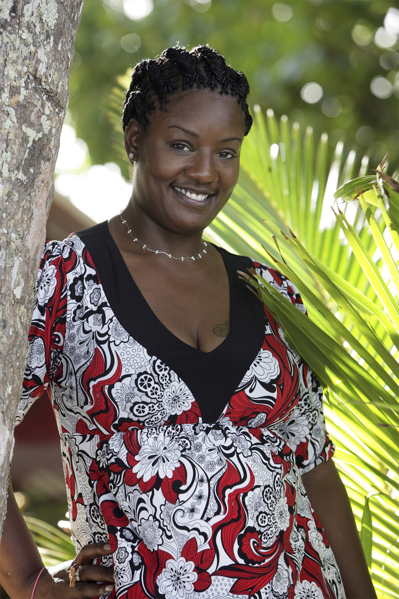
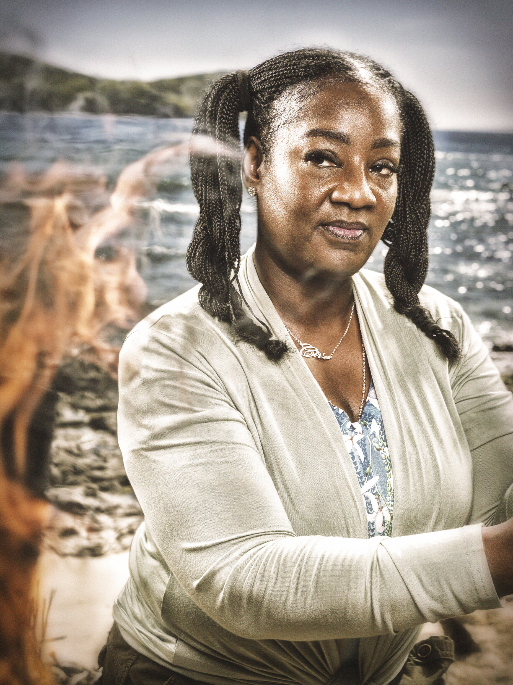

Cirie Fields
Cila Tribe
Age
55
Hometown
Jersey City, NJ
Occupation
Registered Nurse
Previous Seasons
12, 16, 20, 34
Best Finish
3rd (Micronesia)
Times Played
5 (record-tying)
Status
Active

Season 12 (Panama)

Season 50
About
Cirie Fields is one of the most beloved and respected players in Survivor history. She went from a self-described "couch potato" afraid of leaves in Season 12 (Panama) to one of the greatest strategic minds the game has ever seen. Across four previous seasons, she finished 4th (Panama), 3rd (Micronesia), and 6th (Game Changers), never quite reaching the final Tribal Council despite being a masterful player.
Cirie also won The Traitors, but she doesn't consider herself a true "legend" until she has a Survivor win. Season 50 marks her record-tying fifth time playing.